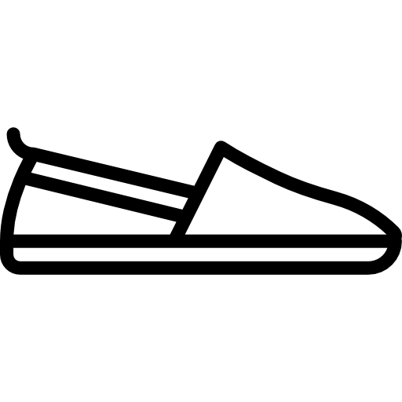
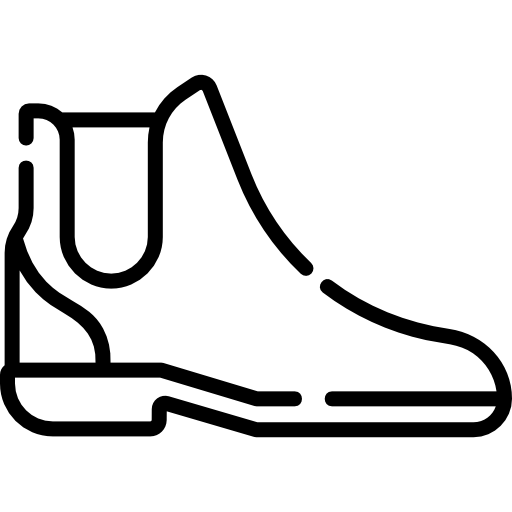
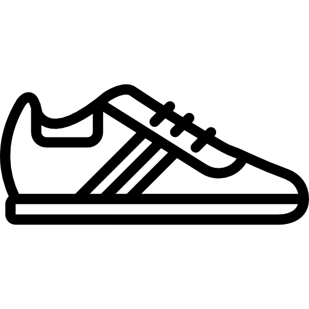
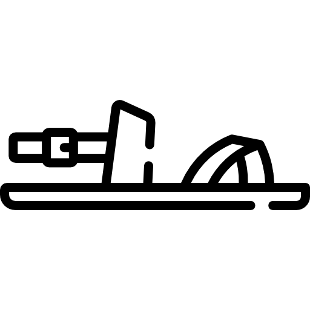
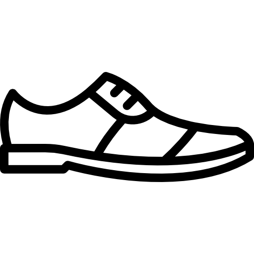

Somos uma marca de tênis ecológicos feitos com plásticos retirados dos oceanos. Com 17 garafas pet conseguimos produzir um par de tênis, usando esse material para confeccionar todo o revestimento interno e externo e seu design. As solas são feitas de borracha de pneus reciclados.

| Produtos | Descrição |
|---|---|
|  | dhasodiasoihoduhoadsoaida |
|  | dajsodopskdosdasodkas |
.png) |
dajsoidiajdosajd |
|  | dshdisjldmsaknsilknd |
|  | dshdisjldmsaknsilknd |
|  | dshdisjldmsaknsilknd |